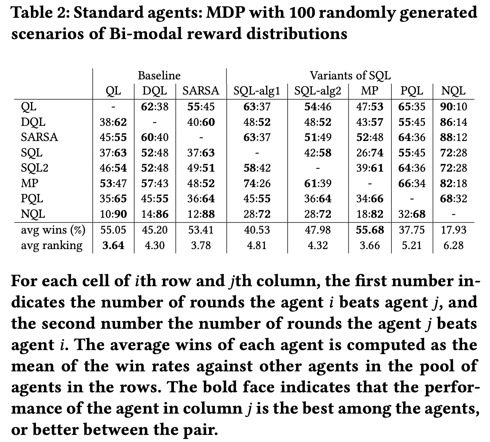

Reinforcement Learning Agents with Mental Disorders
by Baihan Lin, Columbia University, Sep 2018
GitHub code: https://github.com/doerlbh/mentalRL
Joint work with Dr. Guillermo Cecchi (IBM Research), Dr. Djallel Bouneffouf (IBM Research), Dr. Jenna Reinen (IBM Research) and Dr. Irina Rish (Mila, UdeM)
TL;DR
I train AI agents to play games just like people with mental disorders play games, which can (1) help neuroscientists understand these conditions, (2) help create better AI algorithms to tackle human-level challenges, and (3) help doctors clinically monitor psychiatric patients by simply letting them play computer games.

Abstract
Drawing an inspiration from behavioral studies of human decision making, we propose here a more general and flexible parametric framework for reinforcement learning that extends standard Q-learning to a two-stream model for processing positive and negative rewards, and allows to incorporate a wide range of reward-processing biases -- an important component of human decision making which can help us better understand a wide spectrum of multi-agent interactions in complex real-world socioeconomic systems, as well as various neuropsychiatric conditions associated with disruptions in normal reward processing. From the computational perspective, we observe that the proposed Split-QL model and its clinically inspired variants consistently outperform standard Q-Learning and SARSA methods, as well as recently proposed Double Q-Learning approaches, on simulated tasks with particular reward distributions, a real-world dataset capturing human decision-making in gambling tasks, and the Pac-Man game in a lifelong learning setting across different reward stationarities.
Publications
[1] Lin, B., Bouneffouf, D., & Cecchi, G. (2019). Split Q learning: reinforcement learning with two-stream rewards. In Proceedings of the 28th International Joint Conference on Artificial Intelligence (pp. 6448-6449). AAAI Press.
link: https://arxiv.org/abs/1906.12350
[2] Lin, B., Cecchi, G., Bouneffouf, D., Reinen, J., & Rish, I. (2019). Reinforcement Learning Models of Human Behavior: Reward Processing in Mental Disorders. 2019 NeurIPS Workshop on Biological and Artificial Reinforcement Learning (BARL)
link: https://arxiv.org/abs/1906.11286
[3] Lin, B. (2019). Modeling Neurological and Psychiatric Disorders with Reward Biased Reinforcement Learning Models. 2019 Technology in Psychiatry Summit (TIPS)
Method
Inspired by the neurological and psychiatric literature, we build upon the standard Q-Learning, a state-of-art approach to reinforcement learning problem, and extend it to a parametric family of models, called Split-QL, where the reward information is split into two streams, positive and negative. The model puts different weight parameters on the incoming positive and negative rewards, and imposes different discounting factors on positive and negative reward accumulated in the past. This simple but powerful extension of Q-learning allows to capture a variety of reward-processing biases observed in human behavior. Below is our algorithm and parameters:
Results
Empirically, I evaluated the algorithms in three settings: the gambling game of a simple Markov Decision Process (MDP), a real-life Iowa Gambling Task (IGT) and the PacMan computer game with different stationarities.
In the MDP and IGT tasks, our algorithms outperform baseline in many cases.
For instance, in 100 randomly generated arficial environments, our agents beats standard ones most of the times

In the IGT experiment, the behavioral trajectories of the "mental" agents cluster by the psychiatric conditions with real human data.
In the PacMan experiment, our two-stream-reward paradigm demonstrated constant advantages over the baseline algorithms.
Ongoing work
As an extension, I am building a smartphone app to let user play a game for a few rounds and reveals his/her clinical tendency to a spectrum of psychiatric diseases -- a easy and fun way to diagnose and monitor mental health conditions for patients. Stay tuned!
Watch some "mental" agents playing PacMan